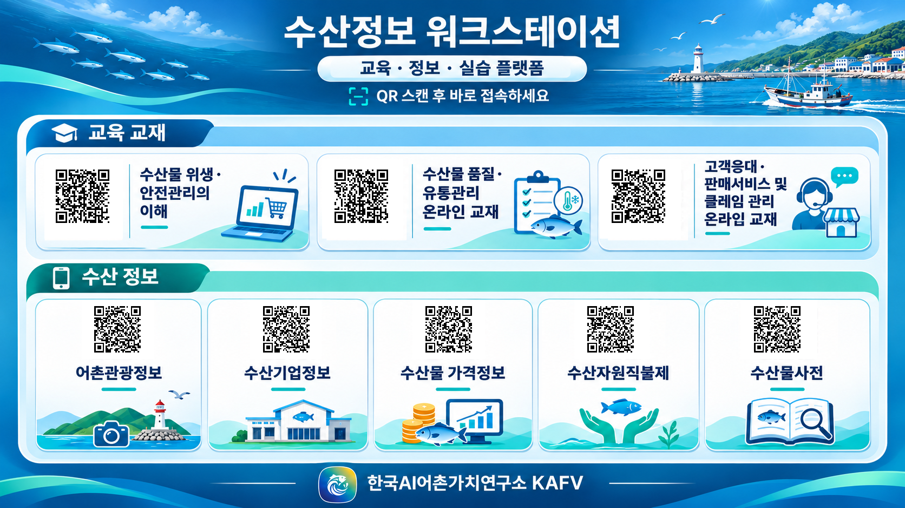

수산물 위생·안전관리의 이해수산물 품질·유통관리 온라인 교재고객응대·판매서비스 및 클레임 관리 온라인 교재어촌관광정보수산기업정보수산물 가격정보수산자원직불제수산물사전수산정보 워크스테이션
교육 · 정보 · 실습 플랫폼
QR 스캔 또는 카드를 눌러 바로 접속하세요

수산물 위생·안전관리의 이해수산물 품질·유통관리 온라인 교재고객응대·판매서비스 및 클레임 관리 온라인 교재어촌관광정보수산기업정보수산물 가격정보수산자원직불제수산물사전교육 · 정보 · 실습 플랫폼
QR 스캔 또는 카드를 눌러 바로 접속하세요